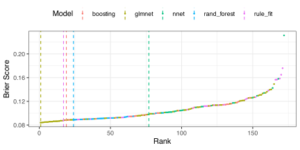
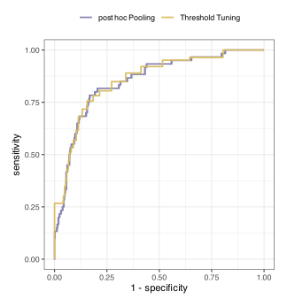
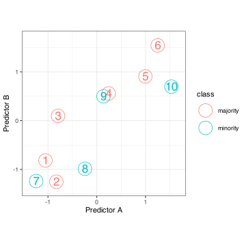
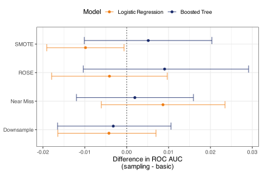

20 Class Imbalances
Examples: churn, click through, diseases (trip test, Parkinson’s), blood specimen mixups
Focus on two class problems, but an issue for all classes
Prior versus likelihood, posterior
note on time slices to make events
20.1 Example: Predicting Myopia
For demonstration, we’ll use data from the myopia study as described in Section 1.6.6 of Hosmer, Lemeshow, and Sturdivant (2013). Myopia (i.e., nearsightedness) can be caused by the shape of one’s eye, genetics, and environmental conditions, including the heavy use of computer or television screens. The data are from a medical study running from 1990 to 1995 and contained 302 girls and 316 boys ranging from 5 to 9 years old. These data are from the initial exam and include demographic factors, several physiological measurements of the eye from an ocular examination, and whether either parent is also myopic. The outcome is determined after a five-year follow-up visit. In this study, 81 (13.1%) of children were nearsighted.
To begin, a 3:1 stratified split was used to partition the data into training and testing sets. Stratification was based on the outcome. This results in a training set of 462 children, only 60 of whom are myopic. For the test set, 21 children out of 156 were myopic. Since the training set and the number of events are small, five repeats of 10-fold cross-validation were used with the same stratification strategy. The repeats will help increase the precision of our resampling statistics.
It is critical that the test set reflects the true event rate in the population of interest. While we may change the event rate in the training set during model development, the test set data should be as consistent as possible with reality.
We’ll conduct some quick exploratory data analysis, then proceed to creating models based on traditional modeling methods, i.e., without making adjustments for class imbalance during model optimization.
20.1.1 Exploring the Data
First, let’s examine the age and sex of the participants. Figure 20.1 shows the class percentages for 10 subgroups of the data. The size of the point is based on the number of children in the subgroup, indicating that many of them are 6 years old, while very few are 9 years old. There were no nine-year-old myopic girls in the training set.
The points suggest a slight increase in myopia rates among girls, but this is well within the error bars defined by the 90% confidence intervals. Due to the concentration of points in a single age group, it is difficult to determine whether there is an age trend. However, since the slight rate increase for girls is constant from ages six to eight, there is little indication of an interaction between these factors.
Second, do genetics matter? If neither parent is myopic, the rates for their children are low: 1.8% with 90% confidence interval (0.3%, 5.7%). When both parents have the condition, the rate is 21.6% (CI: 15.4%, 28.8%), indicating a strong signal. The effects of single paternal and maternal genetics are in between, with rates 15.3% and 12.6%, respectively, with similar confidence intervals.
The ocular exam yielded five different measurements of the eye. Figure 20.2 shows a scatterplot matrix of pairwise relationships, colored by the outcome class. With one exception, there is little to no correlation between predictors. However, the axial length and the vitreous chamber depth have a high positive correlation. Additionally, most predictors have fairly symmetric distributions, although the spherical equivalent refraction data exhibit a moderately strong right skew. This predictor also shows some raw separation between the classes.

20.2 Underlying Mathematical Issue
talk about specific literature on logistic models.
We’ll use two predictors in the myopia data to visualize the effects of different techniques. In the upper-left panel of the lower diagonal of Figure 20.2 we see the spherical equivalent refraction and vitreous chamber depth predictor data from the training set, colored by the outcome class. A flexible discriminant analysis model using MARS basis functions was used to model these data. Interactions between hinge functions were allowed, and generalized cross-validation was used to automatically determine the optimal level of model complexity. The model was fit to the training set, and Figure 20.3 shows the class boundary, defined using the 50% probability cutoff. The events (in red) occupy the space to the left of the main data stream. The class boundary does its best to find the optimal partition of the data, but we can see that less than half of the training set events are not to the left of the boundary.

Trees provide another example that demonstrates how models can overly focus on the majority class. Since most trees employ a greedy search, the first split is often one that captures the majority of the majority class. As the tree-growing process continues, the minority class becomes less likely to be predicted in the nodes, since \(n_{min}\) limits will restrict fine-grained splits. Also, many pruning methods will remove nodes with higher uncertainty, which is often a function of sample size; smaller nodes are more likely to be pruned. When a standard CART model was fit to the data, the rules to each terminal node were:
- if spherical equivalent refraction \(\ge 0.28\) then rate = 6% (\(n\) = 382)
- if spherical equivalent refraction \(\in [0.23, 0.28)\) then rate = 60% (\(n\) = 15)
- if spherical equivalent refraction \(\in [-0.05, 0.23)\) then rate = 33% (\(n\) = 46)
- if spherical equivalent refraction \(\le -0.05\) then rate = 74% (\(n\) = 19)
Split 1 was the initial split, and we can see that it captures most of the non-myopic children. The second and third rules attempt to identify spaces where myopic children can be identified, but these two equations are likely the result of overfitting. Regardless, the splits demonstrate how the majority class can dominate the objective function, making the majority class data more likely to be correctly predicted.
This also brings up a pattern that can occur when dealing with class imbalances that is somewhat counterintuitive: models that are less complex tend to work better than highly complex models. In essence, the more models can adapt to the data, the more likely they are to overfit to the majority class. The rule set shown above is a good example. Tree-based models employ a greedy optimization approach to train the model and can carve out small subspaces of predictors to make local predictions. It would be very difficult for a logistic regression to do the same, at least without enormously complex feature engineering. As a result, these simpler models can have sufficient predictive power to be useful, but not so much as to discern minute patterns in the data, thereby correctly predicting the few events and risking overfitting. We’ll see this pattern in the example data, which is admittedly small, but it has also repeated in much larger datasets with class imbalances.
Before moving on to specific techniques, let’s discuss a potential fallacy encountered when there are rare events: correctly predicting the events to the detriment of the overall model goals is often inappropriate.
20.3 Imbalances Make Us Focus on Our Goals
Before starting the model development process, it is essential to consider how class balance impacts the project goals. It is often the case that the fact that events rarely occur means that the goal of the model is to identify the precious events in a large dataset (such as in information retrieval), even if it is at the cost of more false positives than we would ordinarily tolerate. In other words, finding the events is of paramount importance, and other considerations, such as interpretability, inference, and explanation of predictions, are not terribly important. This is often the case where the hard class prediction is used in an automated system that only takes the qualitative prediction as input. For example, Kuhn and Johnson (2013) discusses a model used for a high-performance computing grid to route computational jobs to the correct queue based on their execution time. The system only needs to know where to send the job, and measures of uncertainty, such as estimated probabilities for how long the job will take, play no role in the process.
However, it can also be the case that we need to understand why the model works or why a data point was predicted to belong to a specific class. In ?sec-drug-interactions, we’ll discuss a project from drug development where a model is used to estimate the risk of a potential drug causing patient harm. We definitely want to find the events (e.g., problematic drugs), but we also need a good understanding of how certain we are that there is an issue.
In other words, we should not confuse what we will do to deal with extreme frequencies with the idea that we should just care about finding important events.
These issues are important to consider because, for class imbalances, several approaches can be taken to mitigate the disparity in class frequencies. Some of them can subvert the accuracy of the predicted class probabilities (i.e., result in poor calibration). If we require a model that predicts useful probabilistic outputs, we would avoid some modeling techniques.
Additionally, we should settle on what performance metrics are most important. We may need multiple metrics, including some to measure calibration (Brier scores), overall class separation (ROC curves), and/or the ability to detect events (PR curves). Additionally, knowing how well the hard class predictions work may require attention to sensitivity, specificity, recall, and other metrics.
These are all issues that should be thought about for every modeling project. We emphasize it here because imbalances, especially extreme ones, substantially raise the level of difficulty.
The next two sections will outline two general philosophies when modeling imbalanced data. The first is to accept that the imbalance and model it as-is. We can utilize all the tools and methods previously discussed to create a model driven by performance statistics based on probabilistic predictions, such as log-loss or the area under the receiver operator characteristic curve. Once we have an appropriate model for these criteria, we can focus on how to postprocess the predictions to produce the optimal hard class predictions.
The second philosophy is to circumvent the issue of the imbalance by either removing it or by making the performance metric aware that some training set points (e.g., the events) are more important than others. Both approaches bias the model to be less focused on the majority class.
Both philosophies have advantages and disadvantages. Generally, if finding the events is the overriding goal, the second philosophy will likely be the best choice.
20.4 Strategy 1: Accepting the State of Nature
In this case, we’ll try to build ML models while generally ignoring the imbalance. The idea is that we should initially focus on optimizing metrics based on class probability estimates, such as the Brier score, cross-entropy, or the areas under the ROC or PR curves. Once we have a model with good calibration and/or discrimination, we can then focus on making the best hard class predictions. We’ll show the advantages and disadvantages of using this strategy.
To get started, we’ll fit a subset of models to these data and generally follow the process outlined in the previous chapters. There is little to no preprocessing required for these models. There is a single pair of highly correlated predictors, but that will be handled by the model in situations where multicorrelation is a concern.
A set of five models was tested. First, a regularized logistic regression was used with glmnet penalties. The predictors included main effects and all two-factor interactions. Penalty values ranging from 10-4 to 10-0.6 were evaluated with four mixtures that ranged from 0% to 100% Lasso. A regular grid of 72 candidates was used to optimize these parameters1.
Single-layer neural networks were evaluated and were tuned over:
- The number of hidden units (2 to 50).
- The L2 penalty (10-10 to 10-1).
- The learning rate (10-4 to 10-1).
- The batch size (8 to 256 samples).
- AdamW momentum (0.8 to 0.99).
SGD via AdamW was used to optimize the model for up to 100 epochs, with early stopping after 5 consecutive poor results. ReLU activation was used.
Boosted trees (via light GBM) were also trained for up to 1,000 iterations with early stopping after 5 bad iterations. The model was tuned over:
- Tree depth (1 to 15 splits).
- Amount of data needed for further splitting (2 to 40 samples).
- The learning rate (10-3 to 10-0.5).
- \(m_{try}\) (1 to 16 predictors).
Additionally, random forests with 2,000 classification trees were tuned over:
- Amount of data needed for further splitting (2 to 40 samples).
- \(m_{try}\) (1 to 16 predictors)..
Finally, a RuleFit model was optimized over:
- The number of boosting iterations (5 to 100)
- Tree depth (2 to 4 splits).
- Amount of data needed for further splitting (2 to 10 samples).
- The learning rate (10-10 to 100).
- Proportional \(m_{try}\) (10% to 100%).
- The L1 penalty (10-10 to 100).
Apart from the logistic regression, a space-filling design of 25 candidates was used for optimization.
Figure 20.4 visualizes the results across and within models. Each point represents a candidate within a model. These are ranked by their resampled Brier score and are ordered accordingly. The vertical lines help highlight where the best candidate was located in the ranking. Interestingly, the logistic regression and RuleFit models had the best results and were very similar (see discussion below). The other three models had both good and bad performance across their candidates, but, in terms of model calibration, did not do as well. This may be due to the fact that this data set is better served by simpler models; the added complexity generated by large tree ensembles and neural networks is likely overfitting to some degree.

While the Rulefit and logistic regressions had the smallest Brier scores, their respective best candidates have issues. For the RuleFit model, the maximum estimated probability of a patient being myopic is 71.5% across all of the assessment sets. While the values are well-calibrated within the observed data range, this upper limit of probability is probably too small to be the final model. We would expect at least one of the held-out predictions to be closer to one when the patient is truly myopic. We also do not have a clear sense of how well-calibrated the predictions are when values are closer to one.
TODO: problem of never predicting the minor class with poor probabilities
For the regularized logistic model, Figure 20.5 illustrates the relationship between the tuning parameters and the Brier score. We can see that while the numerically best results are to use 100% Lasso regularization with a penalty of 10-2, there are several other combinations with nearly equivalent metrics. The model fitted on the entire training set could have a maximum of 136 model coefficients (apart from the intercept) since there are 16 main effects and 120 possible two-way interactions. However, the Lasso model can remove predictors, and the fitted model contains only 1 main effect and 16 interactions. For a model used purely for prediction, this is not a terrible situation. However, the lack of main effects is troubling since there are interaction terms in the model with no corresponding main effects. This is inconsistent with the heredity principle discussed in Section 8.1.1 and suggests that these interactions are unlikely to be real.
To sidestep this issue, we can choose a different tuning parameter candidate. If we use no Lasso regularization, the model will contain all parameters, but regularizes some of them to be close to zero. This would ensure that all of the interaction terms have corresponding main effects in the model. Taking this approach, the penalty associated with the smallest Brier score is 10-0.8. For this model, the resampling estimate of the Brier score is 0.0864%, which is 2.8 worse than the original choice, but still very good when compared to the other models. We’ll use this candidate going forward.
Additionally, Figure 20.5 shows some diagnostics for the logistic regression. These plots are constructed by obtaining the assessment set predictions across the 50 resamples. Note that since repeated cross-validation was used, each training set point has five replicates in the held-out data, totaling 23,100 rows across all resamples. To create the calibration and ROC curves, the five predictions for each training set point are averaged so that we have a set of 462 rows of predictions. Please note that these are approximate and may differ from the performance statistics generated by resampling. For example, Figure 20.5 shows a single curve while the resampled ROC AUC is the average of 50 ROC curves created with 10% of the training set. Despite this, the visualizations can help us characterize the quality of the fit and detect any significant issues in the predictions.

The calibration curve is generally good, except for the upper end, where it indicates that the model underpredicts the probability of myopia. There is also a region around an x-axis point where events occur at a rate of 60%, and the probabilities are slightly overpredicted. All in all, though, the calibration curve is impressive.
The ROC curve is symmetric and fairly unremarkable. The visualization shows that the default 50% threshold for converting the probabilities to hard “yes/no” predictions is somewhat problematic. The sensitivity for this cutpoint is very poor (16.4%) while the specificity is exquisite (98.2%). This is fairly common for class imbalances. The model performs significantly better where the data are more abundant, and since most participants in the study are not myopic, high specificity is more easily achieved.
We quantified performance for these models using a variety of methods. Table 20.1 shows several statistics for both hard and soft prediction types. When assessing class probability estimates, the Brier scores for each model are all acceptably low, and most areas under the ROC curves have objectively large values. The areas under the precision-recall curves are mediocre, with the largest possible value being 1.0 and the worst value is 0.13.
| Model |
Hard Class Prediction Metrics
|
Probability Prediction Metrics
|
|||||
|---|---|---|---|---|---|---|---|
| Accuracy | Sensitivity | Specificity | Kappa | ROC AUC | PR AUC | Brier Score | |
| Logistic (glmnet) | 87.7% | 16.4% | 98.2% | 0.197 | 0.849 | 0.536 | 0.0864 |
| Neural Network | 86.3% | 12.4% | 97.3% | 0.125 | 0.800 | 0.401 | 0.0980 |
| Random Forest | 87.2% | 21.4% | 96.9% | 0.236 | 0.852 | 0.501 | 0.0889 |
| Boosted Tree | 87.2% | 17.3% | 97.6% | 0.200 | 0.864 | 0.508 | 0.0884 |
| RuleFit | 87.7% | 11.1% | 99.0% | 0.141 | 0.869 | 0.541 | 0.0875 |
The hard class predictions in Table 20.1 use the default 50% probability cutoff. A few of the models have accuracies that are larger than the rate that the majority class occurs in the training set (87%). The Kappa statistics indicate a significant signal in the models for predicting qualitative class membership. However, with this cutoff, the model is effectively useless at predicting which people are myopic, as the best possible sensitivity is 21.4%.
If we are satisfied with the model’s ability to discriminate between classes (as evidenced by the ROC curve) and that the probabilities are sufficiently calibrated, we can address the sensitivity problem by selecting an appropriate probability threshold. As with most optimization problems, we require an objective function to make the best decision regarding this tuning parameter. There are a few ways we can approach the problem:
- Given what we know about how the model will be used, we could define specific costs for false negatives and false positives (with correctly predicted classes having zero cost). Using these values, we can choose a threshold that minimizes the cost of the decision. This is similar to a weighted Kappa approach, except the weights would not be symmetric.
- Seek a constrained optimization. For example, we can try to maximize the sensitivity under the constraint that the specificity is at an acceptable value. The ROC curve provides the substrate for these calculations, as it includes sensitivity and specificity for various thresholds in the data.
- Optimize an existing composite score that captures the right balance of sensitivity and specificity. The Matthews correlation coefficient and F-statistics are examples of such metrics.
- Use a multiparameter optimization method, such as desirability functions from Section 15.10, to define a jointly acceptable result (i.e., overall desirability). This would enable us to consider multiple performance metrics, as well as other variables, in the decision-making process.
We’ll focus on the first two options.
To choose the threshold using a custom cost metric (the first option in the list above), we would have to determine an appropriate cost structure for false positives and false negatives, usually based on the consequences of either error. For our myopia example, this is a somewhat subjective choice that depends on some context-specific rationale. In other cases, the costs might be analytically calculated as a function of monetary costs. Figure 20.6 shows examples of cost curves if the false positive cost is fixed at 1.0 and the cost of a false negative varies in severity. The y-axis is the mean of the cost values averaged across the 50 assessment sets.

The figure shows that increasing the cost of incorrectly predicting the events yields increasingly smaller thresholds. This is due to classifying more points as events, regardless of their actual class. The cost metric is punished less by incorrectly predicted non-events, so the overall cost statistic decreases substantially in the curves with higher false negative costs.
It is important to realize that this strategy only optimizes the probability threshold. The model fit (e.g., slope and intercept parameter estimates) has not been affected by the cost function. In the next section, we will consider costs to the objective function that the model uses during training.
Moving on to constrained optimization, when choosing a threshold using an ROC curve, an immediate question arises: “Which data should be used to compute the ROC curve?” Preferably, the cutoff selection should use different data than the data used to fit the model. For example, diagnostic tests that require approval from a government agency (e.g., the Food and Drug Administration in the US) require a different data set to set the threshold. However, this may not be feasible if there is not an abundance of data or the resources to acquire such data. If we can’t hold out another data set, we can use the assessment sets generated during resampling2. There are at least two different approaches.
Option 2A - post hoc pooling: After we have resampled our model configurations, we can pool the assessment set predictions for the best candidate. This ROC curve is computed based on the overall existing class probability estimate values. This approach generated the visualizations in Figure 20.5.
Option 2B - threshold tuning: During model tuning, we treat the probability threshold as a tuning parameter and include it in the grid search. For each threshold in the grid, conditional on any other tuning parameters, we have resampling estimates for sensitivity and specificity. These points are then used to create an ROC curve.
The primary difference between these approaches lies in data usage: do we compute one large ROC curve from pooled data or an ROC curve from resampled statistics? Statistically, the latter is more appropriate, but either might produce acceptable results.
Note that there are a few options when we treat the threshold as a tuning parameter. A one-stage approach would include the threshold along with any other tuning parameters and use a single grid for all3. However, recall that the choice of this parameter does not affect any probability-based metrics, such as the Brier score, log-loss, or the area under the ROC curve. Instead, we could use a two-stage approach where the non-threshold parameters are optimized to find their best results, and then we can use a one-dimensional grid to find the best threshold (based on metrics appropriate for hard class predictions). We took this approach here: 20 threshold values ranging from 2% to 40% defined the second-stage grid.

For the logistic regression model, Figure 20.7 shows the ROC curves for both schemes. The curves significantly overlap for these data. Note that the curve associated with a second-stage grid contains 20 unique points since it is based on the values used in our second-stage grid. The curve for the post hoc pooling method has 462 points, which represents how many unique predicted probabilities are contained in the post hoc data pool.
Using either method for composing the ROC tool provides us with a tool to make trade-offs between sensitivity and specificity. For example, if we want to maximize sensitivity on the condition that specificity is at least 80%, the curve produced by threshold tuning indicates that the cutoff should be 16%. The estimated statistics associated with this value are a sensitivity of 75.7% and a specificity of 81.6%.
This overall approach involves finding a suitable ML model that does not allow class imbalance to alter our methodology, while deferring cutoff selection until the end of the process. This approach can lead to a well-calibrated model that appropriately classifies new samples. The downside becomes apparent when trying to explain individual results to the model’s consumers.
For our myopia example, suppose we make a prediction for a patient where the probability of myopia is estimated to be 20%. The conversation with the patient might sound something like
“We estimate that your child has a 20% chance of being severely nearsighted and, based on this, we would give them a diagnosis of myopia.”
It is natural for someone to find the diagnosis counterintuitive since they are probably comparing the probability to the natural 50% threshold. It might lead the parent to ask:
“That probability seems pretty low to make that diagnosis. Is that a mistake?”
The non-technical response could be:
“We think that the diagnosis is appropriate because the overall chances of being myopic are low, and we have determined that our cutoff for making the diagnosis (16%) gives us the most effective diagnoses.”
Of course, this is paraphrasing, but the hypothetical conversation does illustrate the potential confusion.
This seeming disconnect can become worse as the prevalence becomes smaller. For very rare events (i.e., < 5%), the cutoff associated with the sensitivity-specificity trade-off can be very small, perhaps less than 1%. This is the price paid for having probability estimates that are consistent with the rate at which the event occurs in the wild.
20.5 Strategy 2: Correcting the Imbalance
In the previous section, the only operation used to account for the small minority class was to optimize the probability threshold after the model had been chosen. In this section, we’ll consider several methods for actively addressing the imbalance during model optimization. The two primary classes of techniques are:
- Changing the composition of the training set data.
- Upweighting the minority class’s effect on the objective function.
As we’ll see, these can have a profound effect on the class probability estimates (both good and bad). These techniques are also most effective when the primary goal of the model is to identify events in new data.
20.5.1 Sampling and Synthesis Techniques
One strategy for addressing a class imbalance is to eliminate it in the training set by adding or removing rows, depending on the class. A “sampling” method would remove existing rows from the data (likely from the majority class) to even the class frequencies. The removal may be random or based on characteristics of the existing data. Other sampling methods can oversample existing data. “Synthesis” methods invent new rows of the data in a way that makes them similar to or consistent with existing examples from the same class.
Regardless of the method used, note that rebalancing occurs only on the data being used to train the model. If we are within a resampling loop, the analysis sets are affected, but the assessment sets are not. If we are going to fit a model to the entire data set, the training set is rebalanced, but the test set4 are unaffected. The reason for this is that the data used to measure how well the models work should be drawn from the same population as the data the model will eventually be used to predict. Rebalancing tools deliberately bias the sample to be unlike the population being predicted.
Note that all the techniques mentioned here should be considered as yet another preprocessing method. As such, it is in the interest of the modeler to resample the models and include these steps within the resampling process. It would be inappropriate to apply a technique such as downsampling and then resample the data. Since these methods involve randomness, we need to account for it in our performance statistics.
We’ll describe each technique in the context of its use to modify the training set (or the analysis set when resampling). However, for models that resample the data, such as stochastic gradient boosting or random forests, these tools could also be applied within each resample. For example, our first technique described below, downsamples the majority class to reduce its size. A random forest model could do the same by using a stratified bootstrap sample that produces the sample number of data points for each class (chen2004using?). (chawla2003smoteboost?) and (galar2011review?) provide similar examples. This is highly dependent on the implementation, but it might be advantageous because the sampling/synthesis methods would be applied repeatedly, which can reduce model variance by exposing it to more unique data points.
20.5.1.1 Downsampling
This approach is straightforward: every class with more data than the minority class is randomly sampled, ensuring that all classes have the same number of training set points. The minority class stays the same. For our myopia data, the majority class is randomly reduced from 462 to 81 patients. Figure 20.8 show examples for the two predictor subset including how the FDA fit changes with the reduced data set. We can see that the class boundary is slightly more simplistic than Figure 20.3 but has shifted to the right, capturing more events with the default 50% cutoff (at the expense of increased false positives).
#| '!! shinylive warning !!': |
#| shinylive does not work in self-contained HTML documents.
#| Please set `embed-resources: false` in your metadata.
#| label: fig-subsampling
#| out-width: "80%"
#| viewerHeight: 600
#| standalone: true
library(shiny)
library(bslib)
library(ggplot2)
library(dplyr)
library(munsell)
library(scales)
source("https://raw.githubusercontent.com/aml4td/website/main/R/shiny-setup.R")
# source("https://raw.githubusercontent.com/aml4td/website/main/R/shiny-sa.R")
ui <- page_fillable(
theme = bs_theme(bg = "#fcfefe", fg = "#595959"),
padding = "1rem",
layout_columns(
fill = FALSE,
col_widths = breakpoints(sm = c(-1, 10, -1)),
column(
width = 10,
selectInput(
inputId = "method",
label = " ",
choices = c(
"Downsampled",
"SMOTE",
"ROSE",
"Near Miss",
"Adaptive Synthetic Algorithm",
"Tomek"
),
selected = c("Downsampled")
)
)
),
as_fill_carrier(plotOutput("plot")),
br(),
textOutput("text")
)
server <- function(input, output) {
load(url(
"https://raw.githubusercontent.com/aml4td/website/main/RData/imbalanced_sampled.RData"
))
xrng <- range(imbalanced_sampled$spherical_equivalent_refraction)
yrng <- range(imbalanced_sampled$vitreous_chamber_depth)
orig <- imbalanced_sampled %>%
dplyr::filter(Data == "Original")
output$plot <-
renderPlot(
{
dat <- imbalanced_sampled %>%
dplyr::filter(Data == input$method) |>
dplyr::bind_rows(orig) |>
dplyr::mutate(
Data = factor(Data, levels = c("Original", input$method))
)
grid <- imbalanced_grid %>%
dplyr::filter(Data == input$method) |>
dplyr::select(-Data) |>
filter(!is.na(.pred_yes))
p <-
dat |>
ggplot(
aes(
spherical_equivalent_refraction,
vitreous_chamber_depth
)
) +
geom_point(
aes(
col = class,
pch = class
),
cex = 1.6,
alpha = 2 / 3
) +
facet_wrap(~Data) +
coord_fixed(ratio = 1.4, xlim = xrng, ylim = yrng)
p <- p +
theme(legend.position = "top") +
scale_color_brewer(drop = FALSE, palette = "Set1", direction = 01) +
theme_light_bl()
p <-
p +
geom_tile(data = grid, aes(fill = .pred_yes), alpha = .1) +
geom_contour(
data = grid,
aes(z = .pred_yes),
breaks = 1 / 2,
col = "black"
) +
scale_fill_gradient2(
low = "#377EB8",
mid = "white",
high = "#E41A1C",
midpoint = 0.5
) +
labs(
x = "spherical equivalent refraction",
y = "vitreous chamber depth",
fill = "Probability"
)
print(p)
},
res = 100
)
output$text <-
renderText(
paste(
"Using the default 50% threshold, this method correctly identified",
imbalanced_hits[input$method],
"truly myopic subjects (out of 60).")
)
}
app <- shinyApp(ui = ui, server = server)
appBesides rebalancing, the advantage of downsampling is that models can be trained faster. The downside is that important information might be lost in the majority class(es) due to random sampling. We are diminishing the influence of the non-minority classes and creating a smaller training set. Another effect of this is that our models will tend to be more simplistic, as the data cannot support excessive complexity.
Can also be used inside of SGB and RF
20.5.1.2 Upsamping
Upsampling will create random replicates of the majority class(es) so that all classes have the same frequency in the training set. This increases the training set, sometimes to orders of magnitude larger, so training time can become excessive for some models. There is also the issue of having a potentially large number of replicates for each minority5 class value in the original training set. For example, for models such as random forest that use bootstrap samples to fit models, we could have even more replicates of these data points. Another complication occurs when a model, such as K-nearest neighbors, is used; all of the nearest neighbors might be the same data point.
Upsampling is probably the least used of these techniques do to these issues.
20.5.1.3 SMOTE
The Synthetic Minority Oversampling Technique (SMOTE) is a method that combines random sampling with the creation of novel data points, which are fusions and/or perturbations of existing points. There are a few flavors of this method, but we’ll focus on the original technique by REF where all predictors are required to be numeric.
For each data point in the minority class, compute its K-nearest neighbors. The create a new artificial data point, we select a minority class point at random (\(\boldsymbol{x}_i\)) as well as one of its neighbors. For each predictor, we compute the difference between the original data point and its chosen neighbor (call this \(\delta_j\) for predictor \(j\)). For each predictor, we compute a uniform random number \(u_j \sim U(0, 1)\) and modify the original point as \(x^*_{ij} = x_{ij} + u_j\delta_j\). Essentially, SMOTE generates a hyperrectangle between the selected point and its chosen neighbor, and then randomly places the new sample within the hyperrectangle.
Figure 20.9 illustrates the process using a selected point (large red circle) in the north-west portion of the previously shown predictor space. A neighbor was selected below and to the right of the original point (large red square). The dotted lines show the area where newly synthesized points can be placed, and twenty examples are shown (open circles).

Note that SMOTE does not center the new samples around the original point; they can only be adjacent to it, since newly created data points must lie between it and the neighbor. This has the effect of clumping or clustering points to some degree. This can be seen in Figure 20.11 where there are gaps in the minority class distribution where no minority class data reside. This can be resolved by increasing the number of neighbors, but adding too many would lead to overlap in predictor distributions for each class. One could tune the number of neighbors, but it may not produce a clear winner for this parameter.
note overfitting in Figure 20.11
generalizations
20.5.1.4 ROSE
20.5.1.5 Neighbor-Based Sampling
(mani2003knn?) describe tools for undersampling the majority class using nearest neighbors. Their idea is to find points to remove based on how close (or far) they are from the minority class data. They outlined three procedures that use the name “NearMiss”. We’ll briefly describe each in turn and use a small “toy” data set to outline the details. These data are shown in Figure 20.10. There are 10 data points in the simulated training. The first 6 samples are from the majority class, and the next 4 samples labeled are from the minority data. Each of the three NearMiss methods uses a \(4 \times 6\) distance matrix that captures the distances between the majority and minority class data (there is no need to find the neighbors within these two groups).

The technique called “NearMiss-1” retains the majority-class samples with the smallest average distances to their K nearest neighbors. For example, using K = 2, this table shows the distances between the minority and majority class samples:
| Minority |
Majority Point Labels
|
|||||
|---|---|---|---|---|---|---|
| 1 | 2 | 3 | 4 | 5 | 6 | |
| 7 | 0.46 | 0.41 | 1.41 | 2.33 | 3.10 | 3.73 |
| 8 | 0.83 | 0.64 | 1.22 | 1.62 | 2.26 | 2.94 |
| 9 | 1.77 | 2.00 | 1.01 | 0.12 | 0.95 | 1.53 |
| 10 | 2.99 | 3.06 | 2.40 | 1.29 | 0.57 | 0.89 |
| 2NN Mean | 0.65 | 0.53 | 1.11 | 0.71 | 0.76 | 1.21 |
For the first majority-class observation, its closest minority-class samples are #7 and #8 (each column’s two nearest neighbors are highlighted with a background accent color). The average distance between its two neighbors is 0.65. To balance the data, NearMiss-1 would retain four samples: #1, #2, #4, and #5.
The algorithm for the second NearMiss variant focuses on using the K farthest neighbors, i.e., those with the largest distance between points. However, the instructions from (mani2003knn?) are somewhat ambiguous:
The second method (NearMiss-2) selects [majority] examples that are close to all [minority] examples. In this method, examples are selected based on their average distances to the three farthest [minority] examples.
It is unclear whether the largest or the smallest average distance is used to determine which majority class data to keep. We’ll use the minimum average distance here.
This table highlights the two furthest neighbors (i.e., “2FN”) and their average distances:
| Minority |
Majority Point Labels
|
|||||
|---|---|---|---|---|---|---|
| 1 | 2 | 3 | 4 | 5 | 6 | |
| 7 | 0.46 | 0.41 | 1.41 | 2.33 | 3.10 | 3.73 |
| 8 | 0.83 | 0.64 | 1.22 | 1.62 | 2.26 | 2.94 |
| 9 | 1.77 | 2.00 | 1.01 | 0.12 | 0.95 | 1.53 |
| 10 | 2.99 | 3.06 | 2.40 | 1.29 | 0.57 | 0.89 |
| 2FN Mean | 2.38 | 2.53 | 1.90 | 1.98 | 2.68 | 3.34 |
Note that the neighbors are the opposite of those in the previous table. In this instance, we would retain samples #1, #2, #3, and #4.
NearMiss-3 is a two-step process. First, the nearest K1 nearest neighbors are found for each minority sample. Any majority-class samples that were not on the list of neighbors are excluded. After this, we determine the K2 nearest neighbors of the majority class samples. Of these, the majority class observations with the largest average distance are retained.
In our example, we’ll use two neighbors for both calculations. In the first stage, the majority sample #3 is not a neighbor of any minority-class point, so it is discarded.
This table shows the reduced distance matrix and the average distances:
| Minority |
Majority Point Labels
|
||||
|---|---|---|---|---|---|
| 1 | 2 | 4 | 5 | 6 | |
| 7 | 0.46 | 0.41 | 2.33 | 3.10 | 3.73 |
| 8 | 0.83 | 0.64 | 1.62 | 2.26 | 2.94 |
| 9 | 1.77 | 2.00 | 0.12 | 0.95 | 1.53 |
| 10 | 2.99 | 3.06 | 1.29 | 0.57 | 0.89 |
| 2NN Mean | 0.65 | 0.53 | 0.71 | 0.76 | 1.21 |
Based on these distances, NearMiss-3 selects #1, #4, #5, and #6 to include in the majority class.
Tomek Links (ivan1976two?) is a filtering method that is the opposite of NearMiss. In this case, we will remove data points that are close to some theoretical class boundary. The goal is to create a sort of gap between the predictor distributions for each class. For each class, we determine the (single) nearest neighbor from the opposite class. Two samples form a Tomek Link when they are each other’s nearest neighbors and belong to opposing classes. We would remove both data points that form such a link. (kubat1997addressing?) describe algorithms with similar goals.
An easy example from Figure 20.10 is the closeness of samples #4 and #9. They are extremely close to one another, yet in different classes. A counter-example is sample #3; its neighbor is #9, but the converse is not true since #9 and #4 are neighbors too. For this data set, only samples #1, #3, #6, and #8 are not Tomek Links and these are retained.
When applied to the myopia data, the number of myopic samples is reduced from 60 to 39 and the number of non-myopic rows in the training set drops from 402 to 381. While the reduction in events might compromise the model’s effectiveness, Figure 20.8 shows that the FDA class boundaries produced with the entire data set and the reduced version are extremely similar.
Another potential downside to removing Tomek Links is increased instability. Using a single nearest-neighbor approach yields high variance, since small changes in the data can lead to substantially different solutions. That added variance in the training set might be passed along to the classifier.
Removing Tomek Links is a process that can be applied to data sets with balanced or unbalanced class frequencies; the goal is to reduce overlap in predictor distributions so the model can find a clearer trend in the data. It can also be used in conjunction with other sampling or synthesis methods, preferably afterwards.
20.5.1.6 Boarderline Methods
20.5.1.7 Comparisons Using the Myopia Data
The top panel of Figure 20.11 shows the model configuration statistics for different sampling and synthesis methods. The visualization emulates an ROC curve by plotting the sensitivity versus the false positive rate (i.e., one minus specificity) to demonstrate the trade-offs between the two types of errors. The downsampling panel shows a tight cluster of model results for both types of models, located in the region where sensitivity and specificity are approximately equal. Unsurprisingly, this is due to the equal frequencies of the two classes in the training data (post-sampling). However, this will not always be the case for other data sets. Near-miss sampling has a similar pattern with tighter clustering of model configuration results.

The two synthetic methods showed slightly different patterns. ROSE and SMOTE with logistic regression yielded another tight cluster of results, with somewhat smaller statistics than those obtained through downsampling. For boosting, both SMOTE and ROSE demonstrated greater versatility in the tuning parameter results, enabling trade-offs between sensitivity and specificity. However, the pattern of the configurations favored specificity over sensitivity, especially for SMOTE.
The bottom panel of Figure 20.11 shows that, when sensitivity is improved by these tools, there can be a corresponding increase in the Brier scores. The boosting results show that a high sensitivity raises the Brier to values that would indicate a complete lack of calibration in the predicted probability estimates. This is deliberate; the goal of rebalancing is to have parity in the class frequencies. This enables the model to increase the likelihood of identifying events in the data. The consequence of doing so is that our class probability distributions are biased towards overestimating the probability of an event. However, when assessing the model, we use unbalanced data, and the increased probability of an event is not consistent with the true event rate (as seen outside of the balanced training set).
It is worth noting that we could also optimize the threshold to further fine-tune the sensitivity and specificity values. Unlike the analysis in the previous section, the custom thresholds are much less likely to be excessively small (or large). However, if this is required, we are probably better off using unsampled training sets or using cost-sensitive learning (shown in the next section).
We can see that these tools have an effect on the hard class prediction metrics, such as sensitivity and specificity. Although Figure 20.11 indicates that the calibration properties are not good, meaning that probability estimates do not reflect the rate at which events occur. However, it is possible that the probabilities can help discriminate between the classes for some threshold. For the four sampling methods used on these data, their ROC AUC values for the best logistic regression models ranged from 0.823 to 0.862 The range for the boosted tree models was 0.84 to 0.861. Are these any better or worse than the models that were developed in Section 20.4? Using the bootstrap techniques in Section 14.2, we linked the predictions by row for all of these models, created 2,000 bootstrap samples, and then computed the difference in the area under the ROC curves. Figure 20.12 shows the results. For these data, there doesn’t appear to be any improvement in the ROC AUCs when subsampling and synthesis tools are used. Note that the x-axis scale is fairly small; these AUC values are very similar to one another. One comparison did not cover zero, indicating that using logistic regression with SMOTE had a slightly worse AUC than simply using the training set as is.

These results highlights the idea that rebalancing tools can help a model do better at finding events and that the user should only focus on hard class predictions (and perhaps avoid exposing the users to the probability estimates).
20.5.2 Cost-Sensitive Learning
We’ve previously talked about the consequences of making an incorrect prediction. For example, Section 15.3 showed a model that predicts whether mushrooms are poisonous or not. We could think about this in terms of the general cost of a prediction (not too dissimilar to the discussion related to SVM models).
If we have \(C\) classes, we could write down a cost matrix that defines the specific costs \(\mathcal{c}_{j|k}\) of incorrectly predicting a data point to be class \(j\) when it is truly class \(k\). In many instances, the diagonal terms of this matrix are zero since there is no real “cost” to making the correct prediction. There are cases where different types of benefits are associated with different types of correct predictions. See REF for an example. However, for the purposes of our discussion here, we will assume that the diagonal is zero.
If we have this cost structure, we can use the predicted class probabilities to estimate the expected costs for a collection of data by averaging a set of individual costs.
Let’s say that \(C=3\) and the cost matrix is
\[ \mathcal{C} = \begin{bmatrix} 0.00 & 1.00 & 3.00 \\ 0.50 & 0.00 & 2.00 \\ 0.25 & 0.75 & 0.00 \end{bmatrix} \]
where the true values are in columns, and the predicted class levels are rows. For example, the cost of predicting a data point that is Class 3 as Class 1 is \(\mathcal{c}_{1|3} = 3.00\). Here are some examples of probabilities and their individual costs:
| Truth |
Probability Estimates
|
Cost | ||
|---|---|---|---|---|
| A | B | C | ||
| A | 0.33 | 0.33 | 0.33 | 0.25 |
| B | 0.33 | 0.33 | 0.33 | 0.58 |
| C | 0.33 | 0.33 | 0.33 | 1.67 |
| A | 0.10 | 0.50 | 0.40 | 0.35 |
| C | 0.40 | 0.50 | 0.10 | 2.20 |
If our ML model can utilize custom objective functions, minimizing the expected cost is a fairly rational way to ensure your model is fit for purpose. If not, we can use the expected cost to help optimize the tuning parameters of our model (as we did in Figure 20.6).
Another way some researchers have parameterized cost is to collapse the matrix, resulting in a general cost for misclassifying a sample, regardless of what it was misclassified as. In this case, we sum the cost matrix over columns, resulting in one cost per class. XXX describes these as class weights. In our example matrix shown above, the class weights are \(\mathcal{C}_1 = 0.75\), \(\mathcal{C}_2 = 1.75\), and \(\mathcal{C}_3 = 5.00\). For a two-class outcome (e.g., myopia or not), the class weights are the same as the two off-diagonal entries in the cost matrix.
If we consider class-specific costs as weights, we can generalize many performance metrics to be cost-sensitive. For example, we can make the Brier score cost-sensitive using a modified version of Equation 15.25
\[ Brier = \frac{1}{WC}\sum_{i=1}^n\sum_{k=1}^C w_k(y_{ik} - \hat{p}_{ik})^2 \tag{20.1}\]
where \(w_k\) is the cost or weight for class \(k\) and \(W\) is the sum of the \(n\) weights. If we have two classes and \(w_1 = 5\) and \(w_2 = 1\), every data point whose true outcome is the first class will have five-fold more influence over the objective function. In this way, we can train the model to ensure that it performs better in predicting specific classes than others. This is the basis for cost-sensitive learning6.
In practice, our implementations of ML model metrics may or may not enable cost-sensitive learning. If not, they may have the capacity to handle case weights. These are numeric values associated with each row of the data set that specify how it should affect the computations. There are many types of case weights for different purposes. Here are a few examples:
Frequency weights are integers that specify how often the specific predictor pattern occurs in the data. If there were two categorical predictions with a total of 25 combinations, a very large data set can be compressed by using a case weight that reflects how often each of the 25 patterns occurs. Frequency weights would be assigned to both the training and testing sets.
Importance weights are numbers (decimal and non-negative) that reflect how important the row is to the model fit. This is the type of weight that we’ve discussed above. Importance weights should only be assigned to the training set; the test set should not use them, as it should accurately reflect the state of the data in the real world.
If the metric implementation allows for case weights, we can use importance weights to make them sensitive to different classes.
While not related to class imbalances, importance weights are also useful for time-series data, where we would like more recent data to have a higher priority in the model fit. It can also be useful for dealing with problematic/anomalous data in a model. For example, data collected during the global COVID-19 pandemic can have a negative impact on fits, but it may still need to be included. Assigning these row small case weights may solve those issues.
Note that the scale of class weights may differ across metrics and/or models (as we’ll see below). For one type of model, minority class weights ranging from 1 to 50 might have the same performance as another model/metric that ranges from 1 to 5. There is some trial and error associated with tuning the weights.
If your problem has a well-known cost structure, likely expressed in units of currency, there is probably little ambiguity about it. Otherwise, we might use class weights to either decrease the likelihood of tragic errors from occurring in the model or to help the model overcome a severe class imbalance. In other words, the “importance” in importance weights could mean many different things.
CART book, resampling weights versus case weights
To visualize an example, Figure 20.13 shows the same data as Figure 20.3, but in this case, case weights were used so that the myopic data (in red) had a 15-fold larger impact on the objective function than the non-myopic children. The same FDA model was trained on the data, but it used the case weights. The result is a class boundary that bends in the middle, allowing it to encompass a greater portion of the minority class than the original fit.

Case weights based on the class can also approximate some of the subsampling methods shown in the previous section. For example, instead of dropping training set rows from the data, we can adjust the importance weights so that the sum of the weights in the majority class equals the sum of the weights in the minority class. By doing this, we may be able to obtain a better model since the majority of the majority class is not lost. Similarly, an approximation to upsampling would only increase the minority class weights so that the class weight totals are in equilibrium. This would also result in faster training times than basic oversampling.
It is worth noting that some stochastic ensemble implementations (e.g., boosting and random forests) often confuse the terms “case weights” and “sampling weights.” In these instances, the weights are used to preferentially sample the training set while fitting the models (usually trees) without directly impacting the objective function. This process is more akin to downsampling and upsampling than to cost-sensitive learning.
To demonstrate with the full myopia data set, boosted trees and regularized logistic regression were used once again. The lightgbm implementation was used and, while their documentation is unclear about how the weights are used, it appears that the weights are applied to the objective function and not just the sampling mechanism7.
The same grids were used as in the previous section for both models. For the case weights ranges for each model, some investigation was required to find appropriate changes in the performance metrics. While both parameter ranges were explored in log2 units, starting at 1.0, the boosted model used a maximum weight of 210, whereas logistic regression used maximum weights of 24. The majority class weights were kept at a value of 1.0 for both models. For each model, a sequence of weights was created in a 1D grid, and these were crossed with the original grids.
Figure 20.14 shows the results where the ranges of the weights have been standardized across the two models to be within [0, 1]. In the top panel, another ROC-like visualization is used to demonstrate the effect of using higher weights for the myopic samples. We can see that both models tend to increase sensitivity as the weights increase8. This is not always the case, as some tuning parameters for the model were suboptimal on their own, and adjusting the class weights did not yield a significant change. For the most part, the increase in sensitivity comes with the price of reduced specificity. The different class weights enable us to select the optimal trade-off between the two.
As with subsampling and synthesis methods, the class probabilities generated by this model become increasingly inconsistent with reality as the cost of the minority class increases. The bottom panel shows the degradation in the Brier score tracks with increased sensitivity. Once again, we caution against using these probability estimates with users, as they may not accurately emulate the true likelihood of the event.

When comparing subsampling/synthetic methods to cost-sensitive learning, the latter appears to be more versatile than the former. It enables the user to have more direct control over the trade-off between false-negative and false-positive rates. The downside to cost-sensitive learning is that it may be dependent on the implementation of the method, whereas subsampling/synthetic tools can be used anywhere, as they are specialized preprocessors.
20.6 Revenge of the Prevalence
It is worth revisiting the discussion from Section 15.5 on how the event rate (i.e., prevalence) affects important statistics. We’ll continue to use the myopia data for discussion.
If we assume that the rate of myopia in the population of interest is consistent with our data set (13.1%), we can gain a deeper understanding of how well the model performs. Given our estimates of sensitivity and specificity, the unconditional performance statistics are:
- positive predictive value (PPV): 38.2%
- negative predictive value (NPV): 95.7%
Even though our sensitivity and specificity ended up being fairly balanced, the statistics that convey to true ability to predict are not.
This could exacerbate the potential confusion that can occur when explaining the results of a prediction. Continuing the hypothetical conversation from Section 20.4, the explanation of the PPV might be:
“We understand that this rule of thumb might seem overly stringent. That said, from our data, we know that when we predict that a child is myopic, the probability that they are actually myopic is roughly 38%. This is because most children are not myopic but we do find some evidence to make the diagnosis.”
Conversely, if the child had a very small predicted probability and a myopia diagnosis was not used, the explanation would be:
“Even though the chances that your child is myopic are greater than zero, from our data we know that when we predict that a child is not myopic, the probability that they are actually not myopic is overwhelmingly high (roughly 96%). This is because most children are not myopic and there is not enough evidence to disprove this for your child.”
This is much less ambiguous than the previous hypothetical conversation.
We can try to optimize the model for PPV and NPV in the same way as we did for sensitivity and specificity. However, to do this, the prevalence must be well known for the specific population that will be predicted by the model and should be stable over time.
For example, (covidcdc?) calculated COVID-19 cases and deaths, and estimated cumulative incidence for March and April 2020. The mortality rate varied geographically. For example, during that period, New York City had an estimated mortality rate of 5.3%, while the remainder of the state of New York had an estimated rate of 2.2%. Thankfully, in 2025, these rates are much lower.
This illustrates that computations that depend on the event rate can be challenging, as the values can systematically change under different conditions and over time.
Chapter References
Hosmer, D, S Lemeshow, and R Sturdivant. 2013. Applied Logistic Regression. John Wiley & Sons.
Kuhn, M, and K Johnson. 2013. Applied Predictive Modeling. Springer.
We use the original implementation of the glmnet model, which features a capability where, for a specific mixture value, a single model fit contains results for multiple penalty values. For this reason, we can evaluate a regular grid with 72 candidates with only 4 model fits, one for each mixture value. A regular grid exploits this feature, but a space-filling design would nullify this advantage.↩︎
Or a validation set if multiple resamples are not used.↩︎
When adding the threshold to the optimization grid, it might be helpful to start with a space-filling design and crossing it with a vector of thresholds. This allows us to have data on the thresholds for each of the candidate points. There is minimal overhead associated with this approach, as the thresholding computations occur after preprocessing and model fitting. For example, if an initial grid with 25 points is crossed with 10 threshold values, there are still only 25 model configurations to train, which takes the longest time to compute.↩︎
And validation set, if any↩︎
If there are more than two classes, you can substitute “non-majority” class here.↩︎
Note that our previous use of costs in Figure 20.6 was after the model was trained. In this section, we will use weights/costs so that the model adapts to the cost structure during training.↩︎
A GitHub issue (
https://github.com/microsoft/LightGBM/issues/1299) has evidence that the weights are a “multiplication applied to every positive label weight” and shows some C++ code to that effect.↩︎As with the previous section, these statistics use the default 50% threshold.↩︎